Bạn Đồng Hành
| Molly | Một đứa trẻ được vận may ưu ái.
Một thương nhân lang thang xuất hiện ở bất cứ nơi nào bạn đến. Như người ta vẫn nói, không có nơi nào Molly không thể tới — chỉ có những món hàng mà các nhà thám hiểm chưa từng thấy mà thôi. |
 |
| Akane | Một cô gái bí ẩn với xuất thân không ai biết. Không ai rõ cô đến đây bằng cách nào, nhưng bằng cách nào đó cô đã tự nhận nhiệm vụ dẫn dắt các nhà thám hiểm qua thế giới này. Cô khẳng định mình đã vài trăm tuổi... dù nhìn bề ngoài thì điều đó hơi khó tin. | 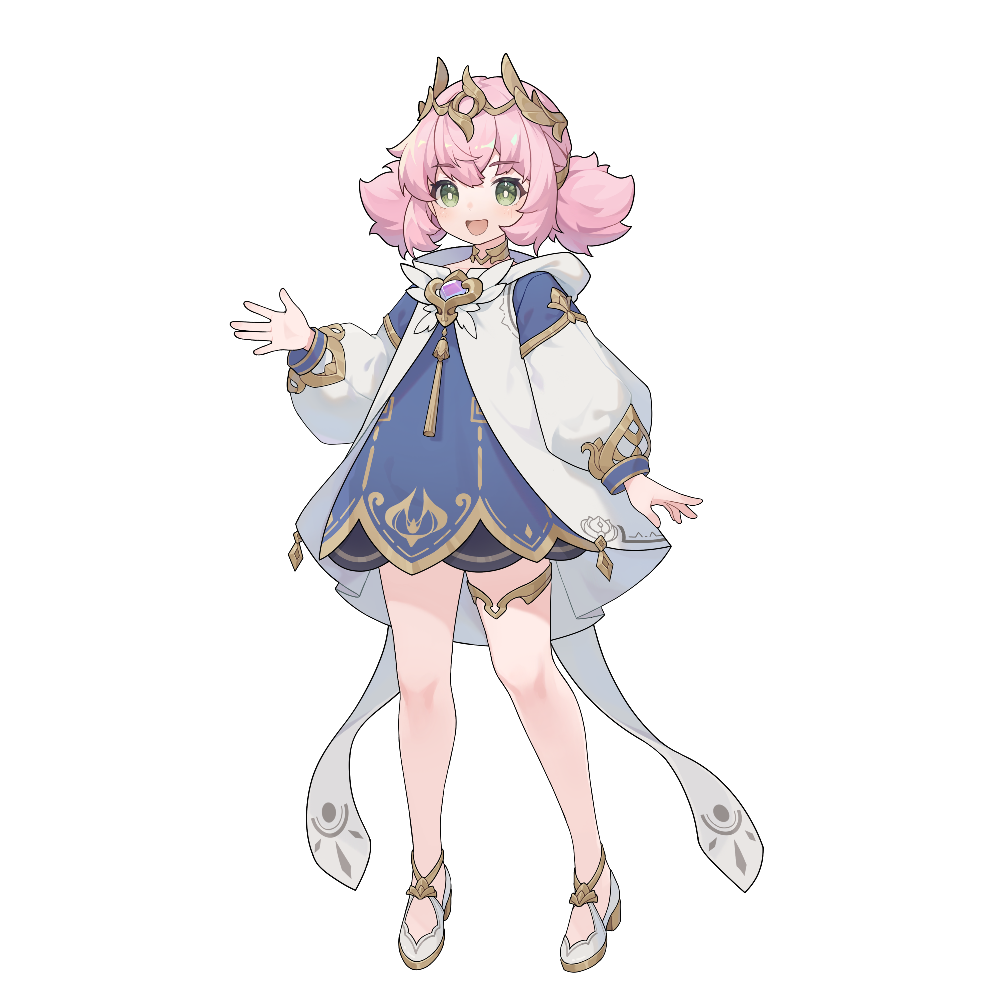 |
| Reina | Một cô gái trầm lặng.
Có vẻ cô là chị gái của Akane — và là người thứ hai nhà thám hiểm gặp trong thế giới này. Không hiểu sao, ngay cuộc trò chuyện đầu tiên của họ đã kết thúc bằng việc nhà thám hiểm đồng ý cứu cô. Và đúng lúc họ sắp hỏi điều đó có nghĩa là gì, cô đã lại chìm vào thế giới riêng của mình. ...Chắc đành phải chờ vậy. |
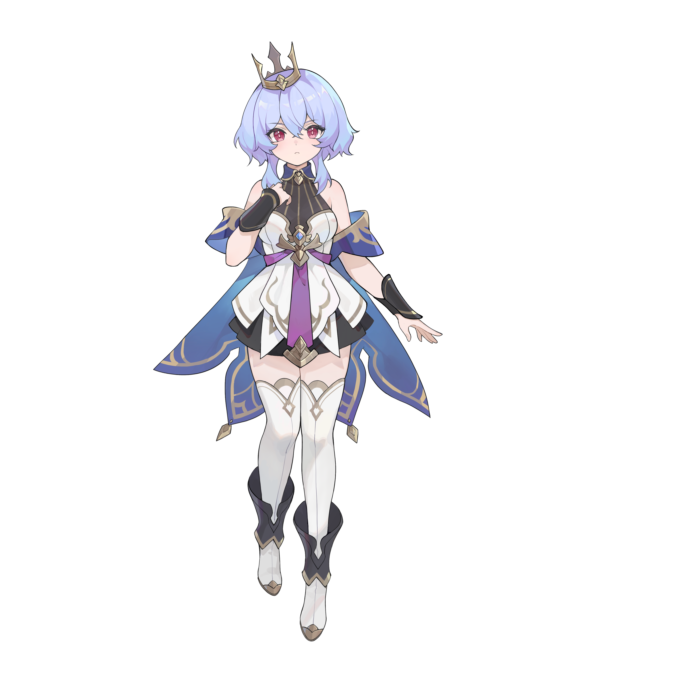 |
| Narss (Chief) | Tộc trưởng của Drasilgard — và là một người đàn ông lúc nào cũng bị truy đuổi. Ông chạm trán kẻ địch thường xuyên hơn cả số lần một nhà thám hiểm chớp mắt. Thật lòng mà nói, bạn phải tự hỏi thời trẻ ông đã làm gì để khiến bầy Sylvanwolves căm ghét dai dẳng đến vậy. |  |
| Hermes | Một thương nhân và nhà giả kim của Drasilgard.
Ông có tài năng đáng nể trong việc bán hàng hóa bình thường với giá phi thường, và dành cả ngày để vắt kiệt từng chút giá trị cuối cùng ngay cả từ những mẩu vụn nhỏ nhất. Rõ ràng ông đã làm giàu... nhưng bằng cách nào đó, lối sống của chính ông lại chẳng thay đổi gì. Khiến người ta tự hỏi — rốt cuộc số tiền đó đi đâu? |
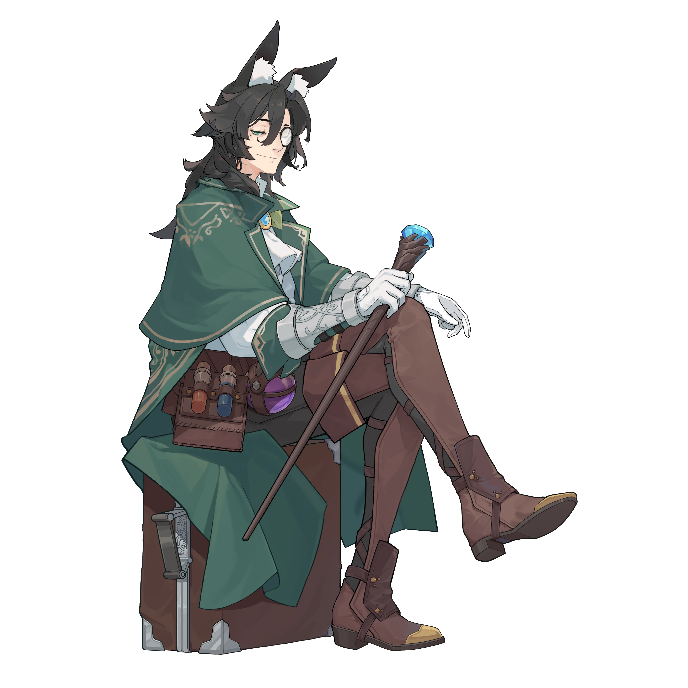 |
| Qin | Một cô gái trẻ thuộc tộc Loongborn.
Cô sống cùng anh trai mình, một Dryason. Trái ngược với người anh điềm tĩnh và chín chắn, cô tràn đầy năng lượng và không bao giờ ngồi yên. Nhỏ bé là thế, cô lại sở hữu sức mạnh đáng ngạc nhiên — và trong chiến đấu, cô thực sự tỏa sáng. |
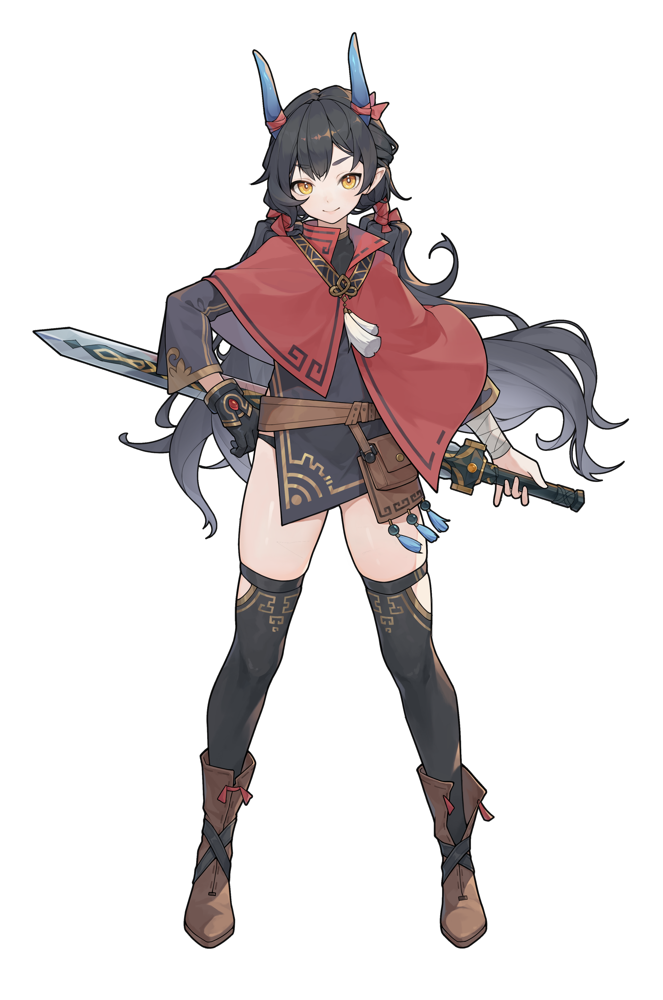 |
| Killian | Một chàng Dryason trẻ dịu dàng.
Nếu không vùi đầu vào các văn bản cổ, anh lại ra ngoài tìm thêm. Anh có thể thức nhiều ngày không nghỉ, hoàn toàn đắm chìm trong việc giải mã các phiến đá — chẳng trách anh đã được gọi là nhà khảo cổ học. Cẩn thận, nghiêm túc và tỉ mỉ, anh luôn lên kế hoạch cho từng chi tiết trước khi bước vào một tàn tích. Tiếc thay, ngay cả kế hoạch tốt nhất cũng không trụ nổi trước tâm trạng thay đổi liên tục của em gái anh. |
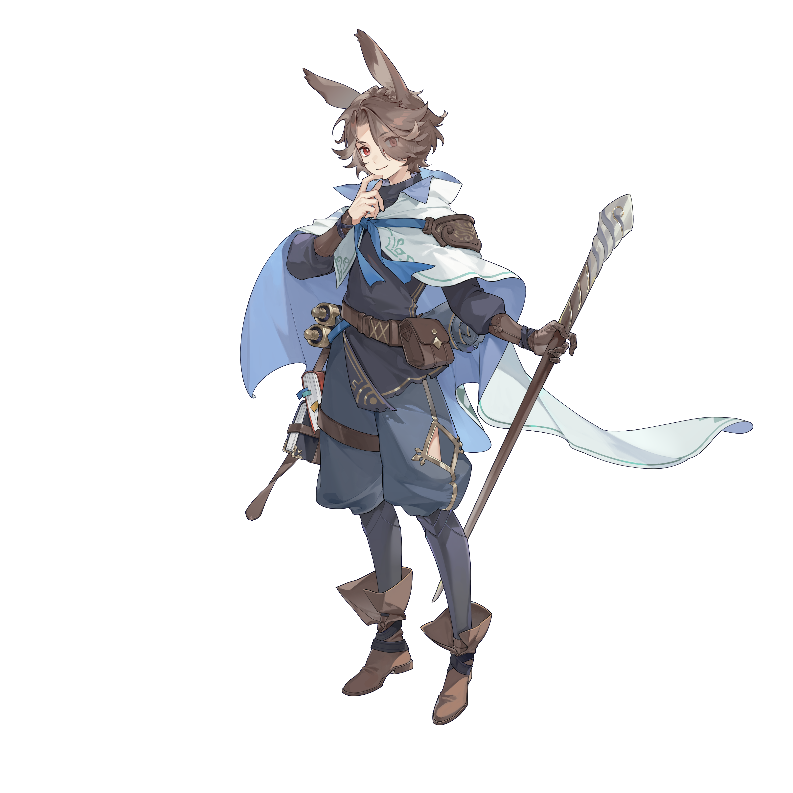 |
| Mysterious Merchant | Một nhân vật bí ẩn không bao giờ rời khỏi chiếc áo choàng của mình.
Lúc nào cũng ẩn mình trong màn sương, ngay cả cái tên của ông cũng khẳng định ông chính là định nghĩa của từ “bí ẩn”. Nhà thám hiểm thường tự hỏi ông lấy đâu ra những món đồ lặt vặt kỳ lạ mà quý giá đến vậy. Thật lòng mà nói... ông đúng là một bí ẩn. |
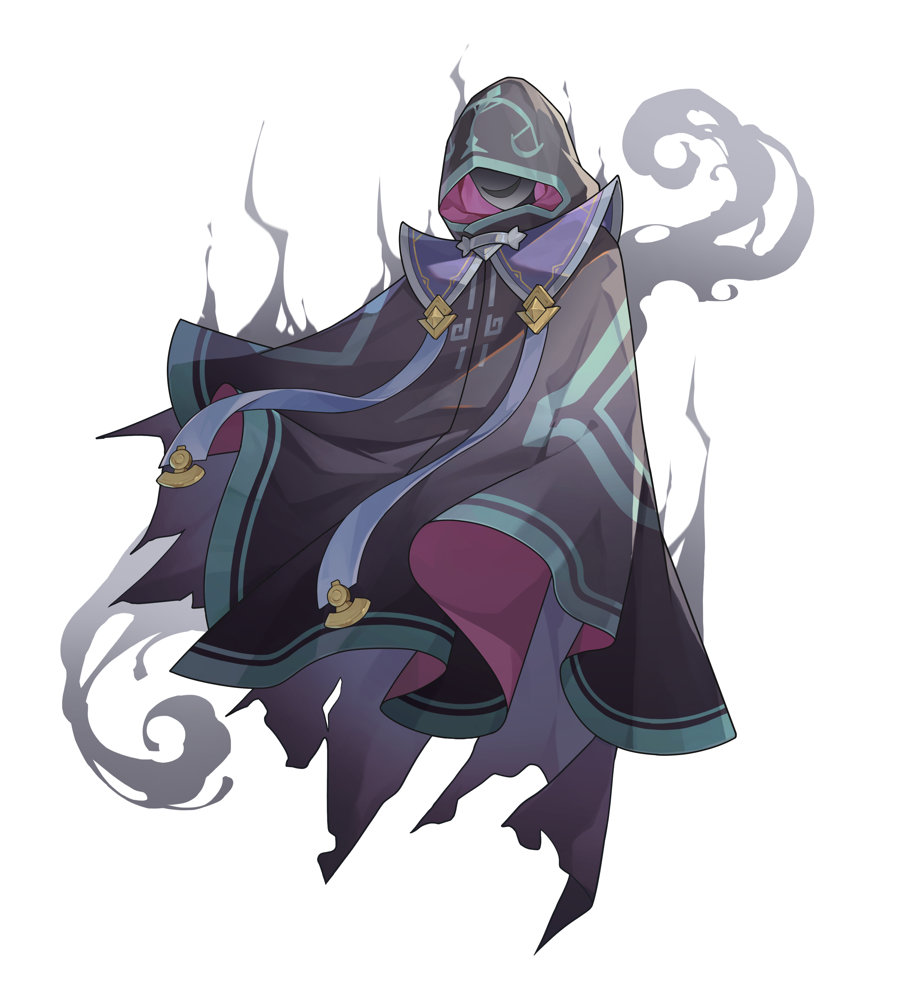 |
| Naira | Một người phụ nữ uy nghiêm, phi thường.
Người cai trị Fortburg và là Ascended One át chủ bài của Cinder Ridge. Dù là tảng đá chắn đường hay quái vật nổi điên, chẳng thứ gì trụ được lâu trước những đòn nghiền nát của cô. Mang trong mình sứ mệnh khôi phục quê hương, Naira gánh một gánh nặng lớn như chính những ngọn núi. |
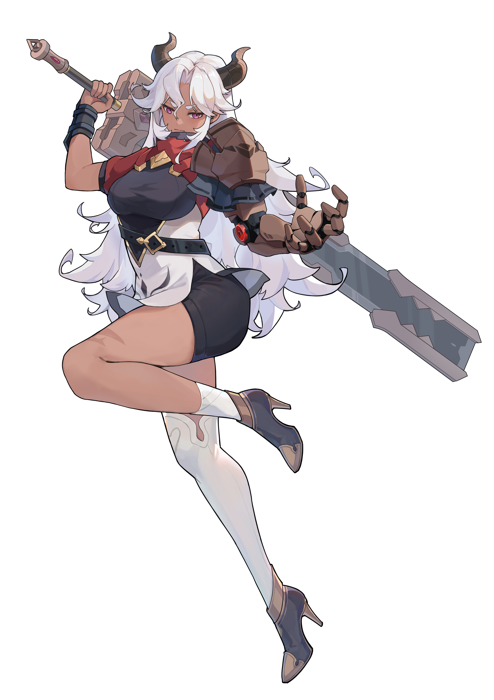 |
| Micaela | Nhà phát minh thiên tài thường trú của lò rèn.
Bất cứ thứ gì Micaela chạm tay vào cũng trở nên thực sự độc nhất vô nhị — trên đời này không có bản sao thứ hai. “Vượt lên chính là đứng trên đỉnh cao và vươn tới bầu trời! Vậy nên nếu mình chỉ cần điều chỉnh một chút xíu những gì đã có, bầu trời mang tên ‘ước mơ’ ấy sẽ nằm trong tầm tay... có lẽ vậy!” — Micaela tuyên bố thế. |
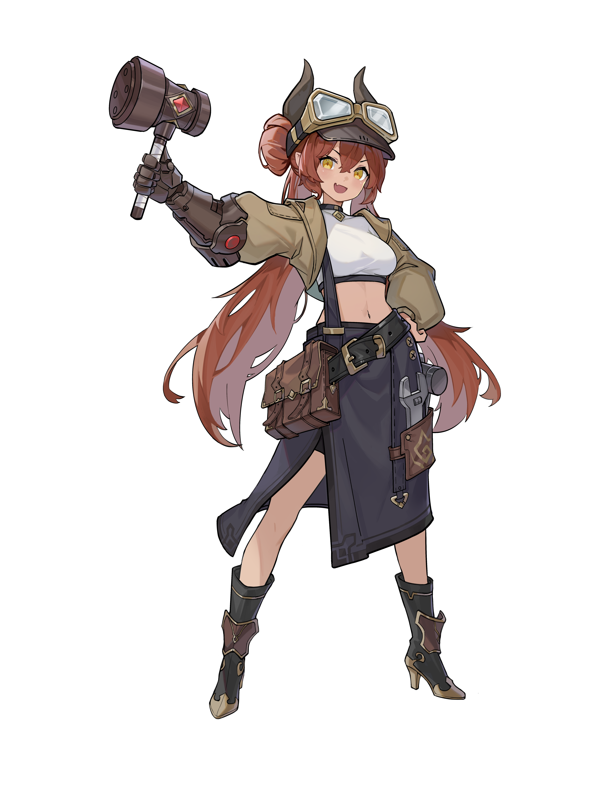 |
| Karlos | Chàng trai nhiệt huyết nhất Cinder Ridge!
Không có gì mà luyện tập không sửa được — và nếu có, cứ cộng thêm mười cây số chạy nước rút trồng cây chuối đeo tạ! Đương nhiên, phương pháp này từ trước đến nay mới chỉ được thử trên Karlos. Bất cứ ai khác thử cũng là liều mạng. Có hơi phũ khi nói vậy, nhưng... anh ta đúng là một tên ngốc chỉ có cơ bắp. Thật lòng mà nói, cường độ luyện tập của anh ta khó mà tin nổi. |
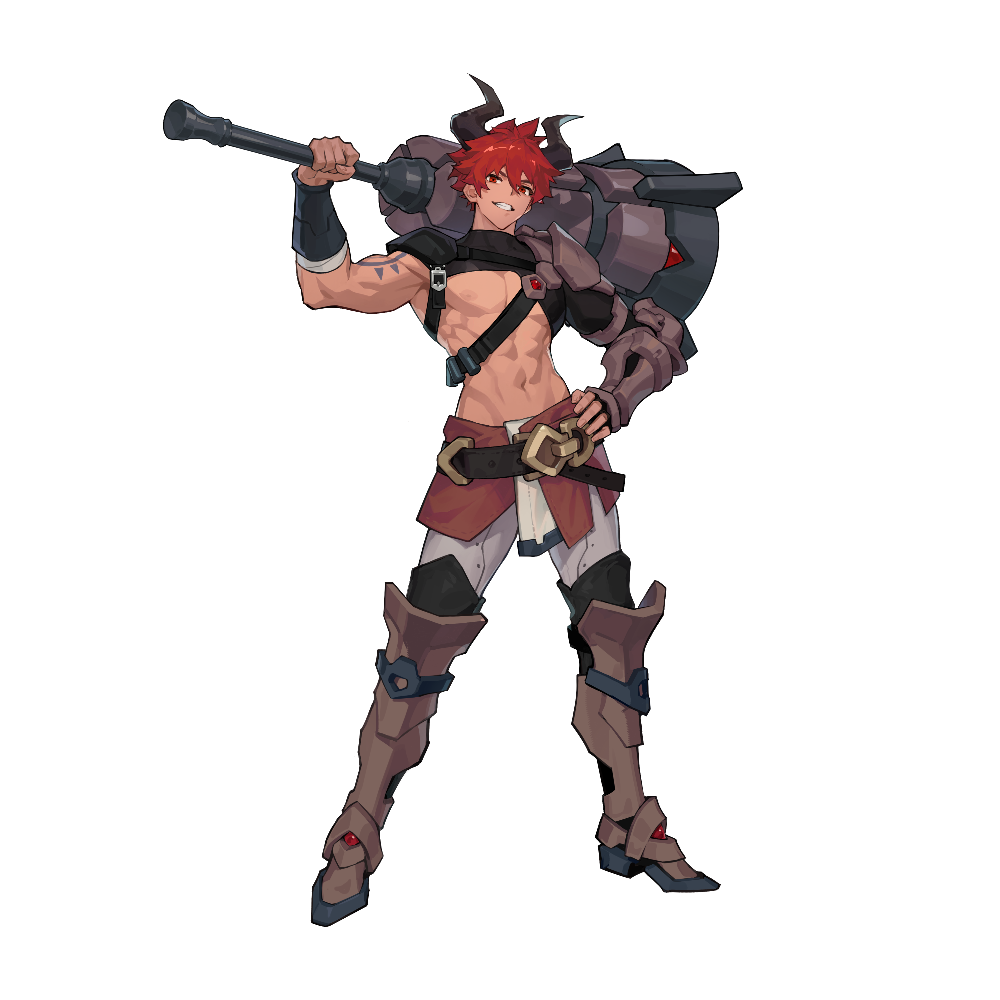 |
| Braulio | Một thương nhân vạm vỡ và là người anh cả luôn đáng tin cậy
Trong cộng đồng của họ, ngay cả những người không cùng huyết thống cũng sống như một gia đình, với người anh cả chăm lo cho những người còn lại. Braulio luôn là người anh cả ấy — gánh vác từ sớm, vượt núi này sang núi khác với hàng hóa trên lưng, kiếm sống cho tất cả mọi người. Giờ đây khi các em đã trưởng thành, Braulio vẫn chưa học được cách buông tay. |
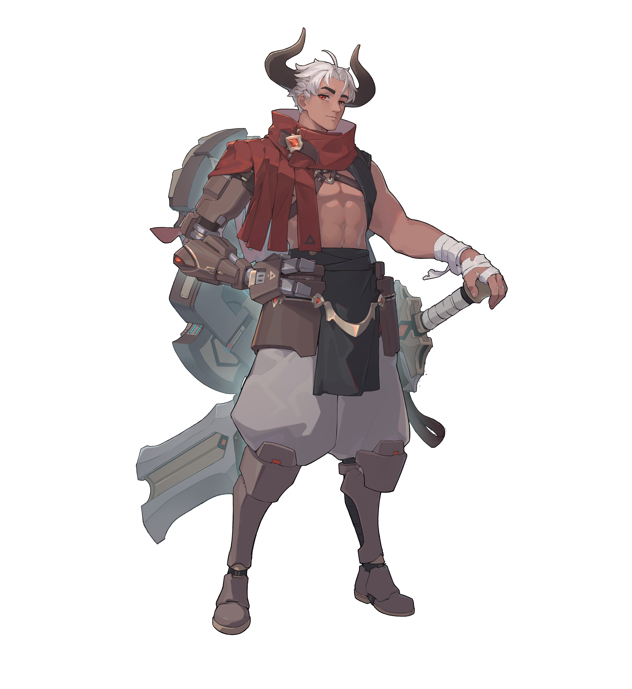 |
| Mateo | Vóc dáng nhỏ bé, trí tuệ lớn lao.
Người dân ở đây thường tràn đầy năng lượng và cơ bắp, sống khỏe nhờ lao động chăm chỉ và mồ hôi. Mateo thì khác hẳn hình ảnh đó, ngoại trừ đôi sừng và làn da rám nắng. Anh tránh tập thể dục, dành cả ngày trong trạng thái nửa tỉnh nửa mê, và có thể ngồi đọc sách từ sáng đến tối — đôi khi quên cả ăn. ...Có lẽ vì thế mà anh chẳng bao giờ cao thêm được. |
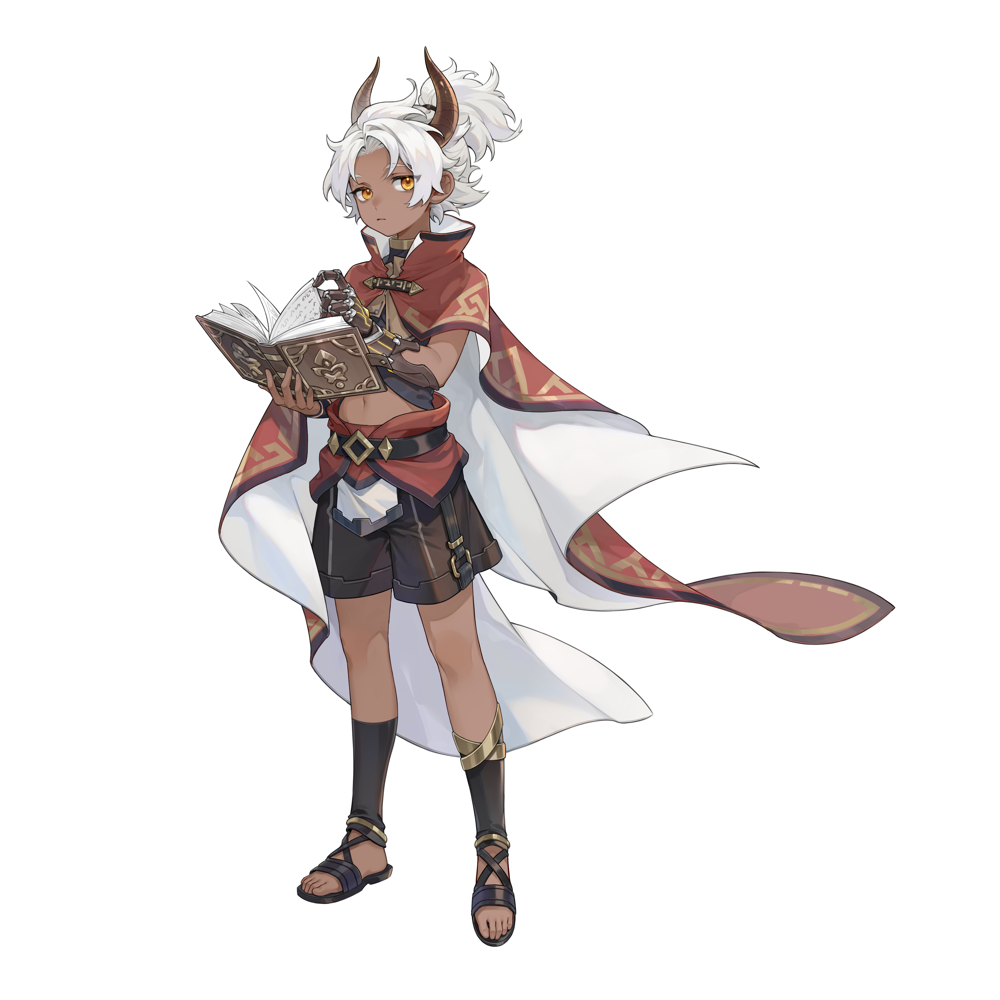 |